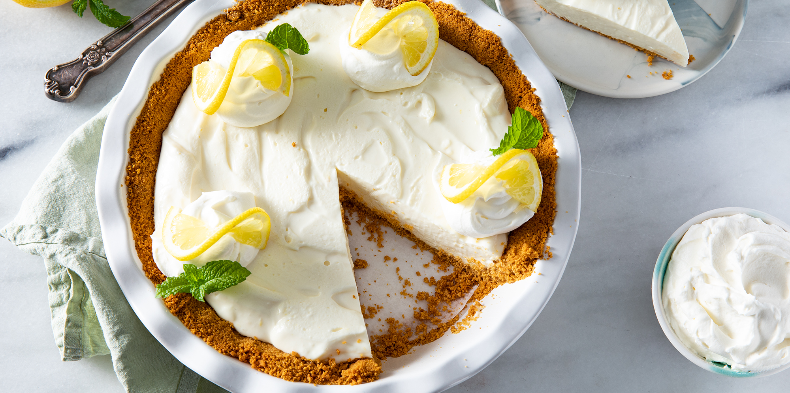

Lemon Icebox Pie

Description
A family favorite when a no-bake, fast pie is needed. (And family members too small to use the oven can make dessert!) Very pretty when garnished with whipped cream and mint leaves.
Ingredients:
- 1 (9 inch) prepared graham cracker crust
- 2 (8 ounce) packages cream cheese, softened
- 1 (14 ounce) can sweetened condensed milk
- 2 lemons, juiced
- 1 teaspoon lemon zest
Steps:
- In a medium mixing bowl, beat cream cheese until fluffy. Add condensed milk, lemon juice, and lemon rind. Mix until smooth. Pour mixture into crust. Refrigerate at least 2 hours before serving. Garnish with whipped cream and mint leaves if desired.
Nutrition Facts
Per Serving: 506 calories; protein 9.7g; carbohydrates 50.6g; fat 31.3g; cholesterol 78.3mg; sodium 399.4mg.